Snakes of Chad
71 living snake species are recorded in Chad in SnakeList: 28 venomous and 43 non-venomous, from 11 families.
- 71living species
- 11families
Danger to people · tap a number to show only those snakes
Harmful = dangerously venomous + giant constrictors. Harmless = not venomous and not a giant constrictor. Mildly venomous snakes have no serious bites to people documented. Any snake can bite.
These totals count the unique living snake species SnakeList records in Chad. A species counts if it is recorded anywhere in the country, so not every snake lives in every part of it.
In SnakeList’s checklist filters
How many of the 71 living species here each filter in the SnakeList app picks out – tap a number to show only those snakes.
Snake family6 types, 11 families
Type
Family
Habitats14 habitat groups
Habitats are estimated from where each snake is recorded and what kind of snake it is, as in SnakeList; a snake can count in several.
Characteristics28 venomous, 3 constrictors
Constrictor and Non-constrictor count only snakes whose family or genus is documented as constricting or not; the rest are not documented.
Other filters5 popular, 16 rare
- 0extinct
Species
Showing 71 species
- No photo yetAdler's Worm SnakeMyriopholis adleri
 African File SnakeLimaformosa crossi
African File SnakeLimaformosa crossi African Rock PythonPython sebae
African Rock PythonPython sebae Angolan Garter SnakeElapsoidea semiannulata
Angolan Garter SnakeElapsoidea semiannulata Awl-headed SnakeLytorhynchus diadema
Awl-headed SnakeLytorhynchus diadema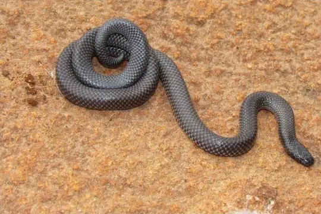
Black-headed MicrelapsMicrelaps vaillanti Black-necked Spitting CobraNaja nigricollis
Black-necked Spitting CobraNaja nigricollis BoomslangDispholidus typus
BoomslangDispholidus typus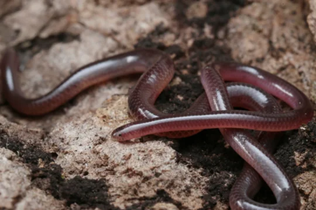
Bouet's Worm SnakeMyriopholis boueti Brown Forest CobraNaja subfulva
Brown Forest CobraNaja subfulva Brown House Snake (fuliginosus)Boaedon fuliginosus
Brown House Snake (fuliginosus)Boaedon fuliginosus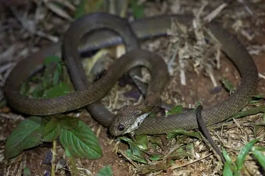
Central African Egg-eating SnakeDasypeltis fasciata- No photo yetCentral-African Lined House SnakeBoaedon paralineatus
- No photo yetChad Wolf SnakeLycophidion tchadensis
 Confusing Egg EaterDasypeltis confusa
Confusing Egg EaterDasypeltis confusa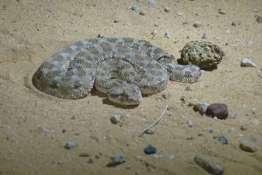
Desert Horned ViperCerastes cerastes Dull Purple-glossed SnakeAmblyodipsas unicolor
Dull Purple-glossed SnakeAmblyodipsas unicolor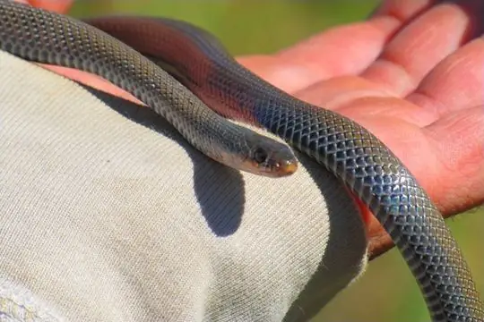
Eastern Crowned Smooth SnakeMeizodon regularis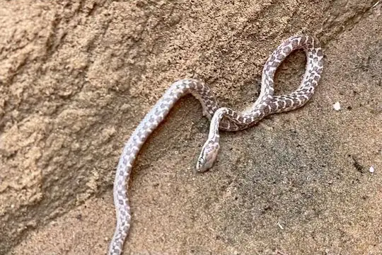
Egyptian CatsnakeTelescopus obtusus Egyptian CobraNaja haje
Egyptian CobraNaja haje False Smooth Snake (cucullatus)Macroprotodon cucullatus
False Smooth Snake (cucullatus)Macroprotodon cucullatus Gaboon ViperBitis gabonica
Gaboon ViperBitis gabonica Gans' Egg EaterDasypeltis gansi
Gans' Egg EaterDasypeltis gansi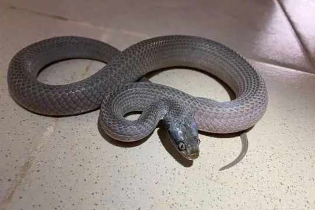
Ghana Herald SnakeCrotaphopeltis hippocrepis Ghana Shovel-snoutProsymna meleagris
Ghana Shovel-snoutProsymna meleagris Green Night AdderCausus resimus
Green Night AdderCausus resimus Irregular Green SnakePhilothamnus irregularis
Irregular Green SnakePhilothamnus irregularis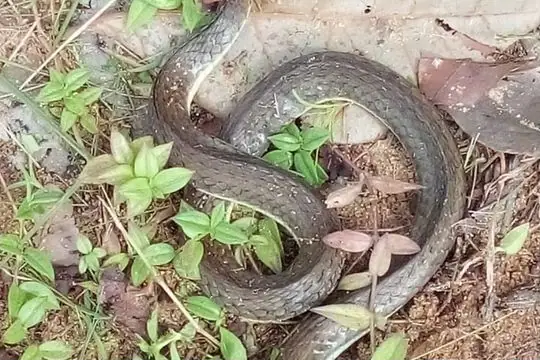
Kalahari Sand SnakePsammophis afroccidentalis- No photo yetLanza's Worm SnakeMyriopholis lanzai
 Lined Olympic SnakePsammophis lineatus
Lined Olympic SnakePsammophis lineatus Lineolate Blind SnakeAfrotyphlops lineolatus
Lineolate Blind SnakeAfrotyphlops lineolatus- No photo yetLong-lined House SnakeBoaedon longilineatus
 Moila SnakeMalpolon moilensis
Moila SnakeMalpolon moilensis Mole Viper (aterrima)Atractaspis aterrima
Mole Viper (aterrima)Atractaspis aterrima- No photo yetMole Viper (dahomeyensis)Atractaspis dahomeyensis
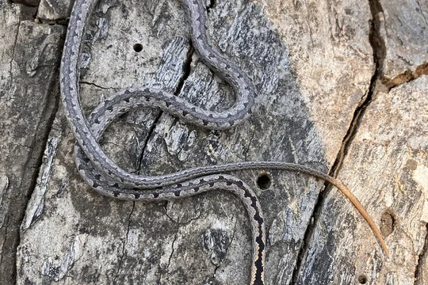
Mopane SnakeHemirhagerrhis nototaenia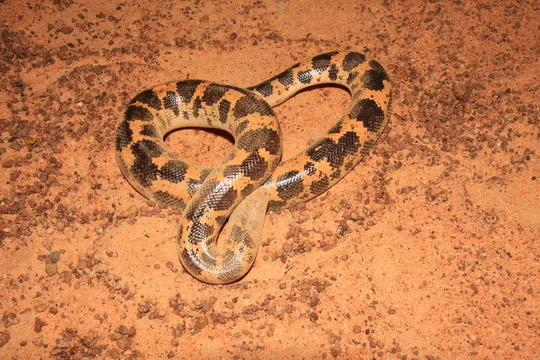
Müller’s Sand BoaEryx muelleri Nubian Spitting CobraNaja nubiae
Nubian Spitting CobraNaja nubiae Olive Grass RacerPsammophis phillipsii
Olive Grass RacerPsammophis phillipsii Olive Marsh SnakeNatriciteres olivacea
Olive Marsh SnakeNatriciteres olivacea Olive Whip SnakePsammophis mossambicus
Olive Whip SnakePsammophis mossambicus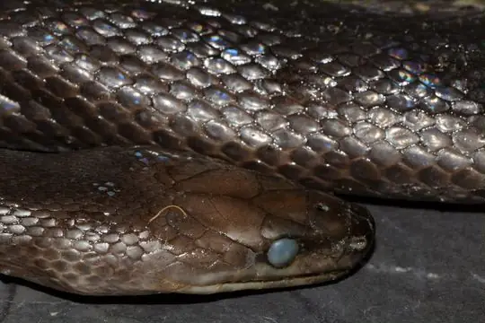
Peri-Forest House SnakeBoaedon perisilvestris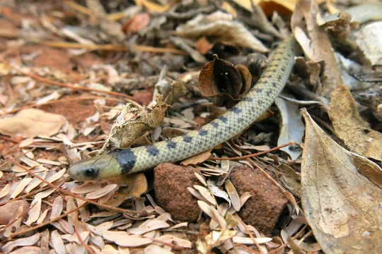
Plumbeous Centipede EaterAparallactus lunulatus Red-lipped SnakeCrotaphopeltis hotamboeia
Red-lipped SnakeCrotaphopeltis hotamboeia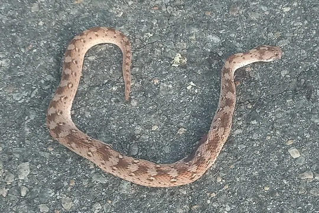
Roman's Carpet ViperEchis romani Roman's Saw-scaled ViperEchis leucogaster
Roman's Saw-scaled ViperEchis leucogaster Sahara RacerPlatyceps saharicus
Sahara RacerPlatyceps saharicus Sahara Sand ViperCerastes vipera
Sahara Sand ViperCerastes vipera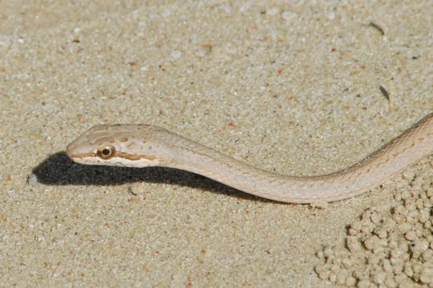
Saharan Sand SnakePsammophis aegyptius Sahel Egg EaterDasypeltis sahelensis
Sahel Egg EaterDasypeltis sahelensis- No photo yetSahelian Burrowing AspAtractaspis micropholis
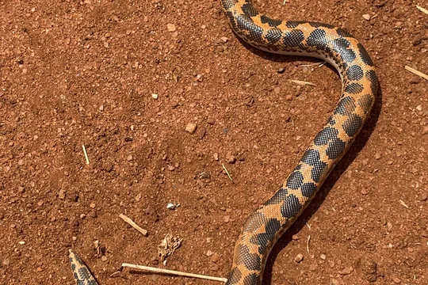
Sand BoaEryx colubrinus- No photo yetSavanna Lesser File SnakeGonionotophis grantii
 Smith's African Water SnakeGrayia smithii
Smith's African Water SnakeGrayia smithii Spotted Blind SnakeAfrotyphlops punctatus
Spotted Blind SnakeAfrotyphlops punctatus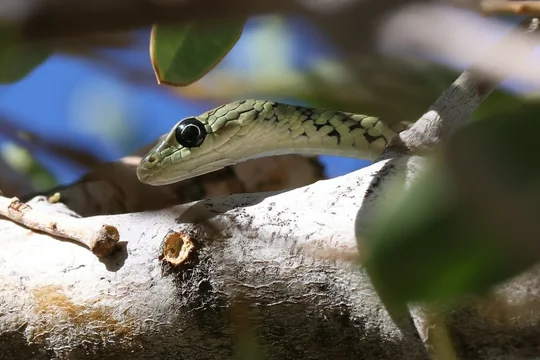
Spotted Bush SnakePhilothamnus semivariegatus Spotted Night AdderCausus maculatus
Spotted Night AdderCausus maculatus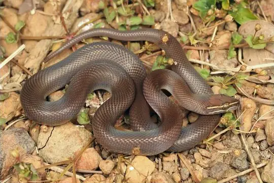
Striped House SnakeBoaedon lineatus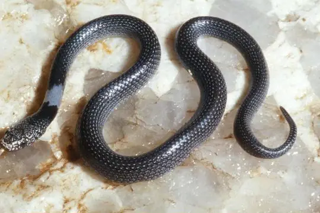
Taylor's Wolf SnakeLycophidion taylori Tholloni's African Water SnakeGrayia tholloni
Tholloni's African Water SnakeGrayia tholloni- No photo yetTwo-colored Blind SnakeTricheilostoma bicolor
 Watson's Burrowing AspAtractaspis watsoni
Watson's Burrowing AspAtractaspis watsoni- No photo yetWeidholz's Pink BlindsnakeLetheobia weidholzi
 Werner's Garter SnakeElapsoidea laticincta
Werner's Garter SnakeElapsoidea laticincta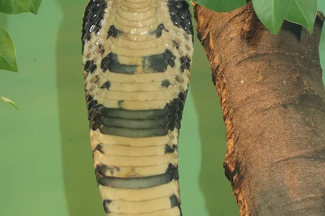
West African Banded CobraNaja savannula Western Beaked SnakeRhamphiophis oxyrhynchus
Western Beaked SnakeRhamphiophis oxyrhynchus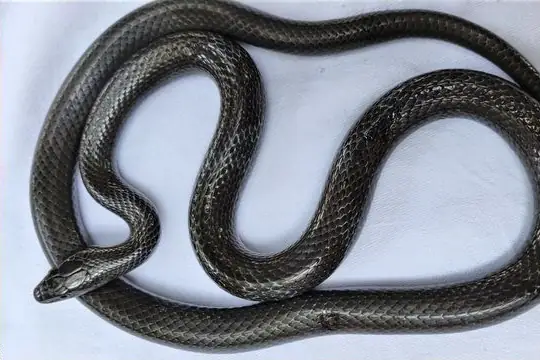
Western Crowned SnakeMeizodon coronatus- No photo yetYellow House SnakeBoaedon subflavus
 Yellow-flanked SnakeCrotaphopeltis degeni
Yellow-flanked SnakeCrotaphopeltis degeni Lycophidion semicinctum
Lycophidion semicinctum- No photo yetMyriopholis occipitalis
No snakes in Chad match.
Chad’s snakes in numbers
- Families: Colubridae 19, Lamprophiidae 11, Psammophiidae 8, Atractaspididae 7, Elapidae 7, Viperidae 7, Leptotyphlopidae 5, Typhlopidae 3, Boidae 2, Prosymnidae 1, Pythonidae 1.
- 1 is recorded in no other country or territory in SnakeList: Chad Wolf Snake.
How precisely they are recorded
Of the 71 living species recorded in Chad, 7 are recorded by province in SnakeList’s data; 64 are recorded only for Chad as a whole, so the province pages list them as possible rather than recorded. SnakeList records each species by province, not by exact spot, so a species listed for a province may live in only part of it.
Provinces
The provinces where SnakeList records snakes, with how many living species are recorded in each. Each page has its species, venomous snakes, families, the species found only there, its cities and neighbours.